| 日付 | 2007年10月21日（日） |
|---|---|
| 山域 | 尾瀬 |
| メンバー | グループ（男4女4） |
| 山行形態 | 前夜泊日帰り |
| アクセス | 車 |
| ルート (Map) | 鳩待峠→至仏山→至仏山荘→鳩待峠 |
友人が至仏山の企画を立てたので、それに乗ることにする。
総勢8名、久々の大人数登山。
前夜発一泊の山行。麓の宿で泊まる。
朝食をとって、鳩待峠に向かう。
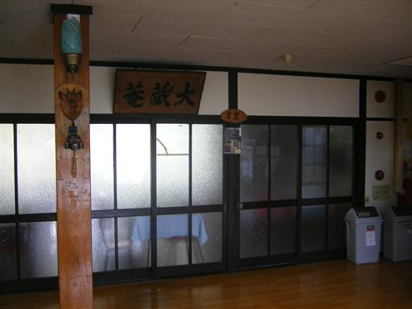
青空も見えるが、全体に薄らと雲がかかっている。
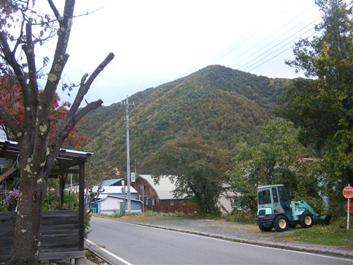
8:16 鳩待峠到着。標高1591m。
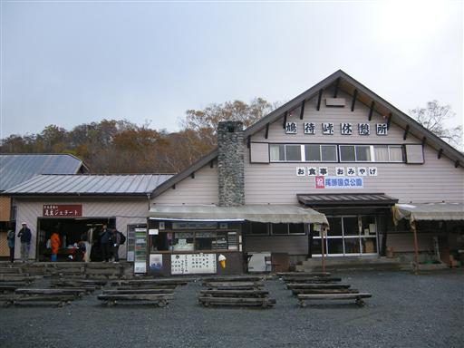
ここは日光国立公園から分離独立し、今年の夏に尾瀬国立公園に指定された。
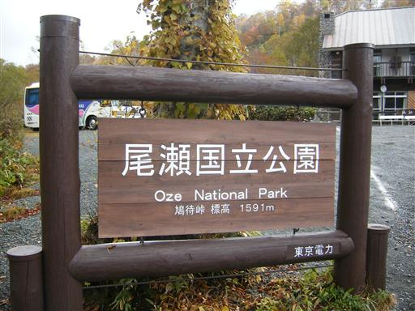
紅葉に染まった登山道を登っていく。意外に笹が多い。
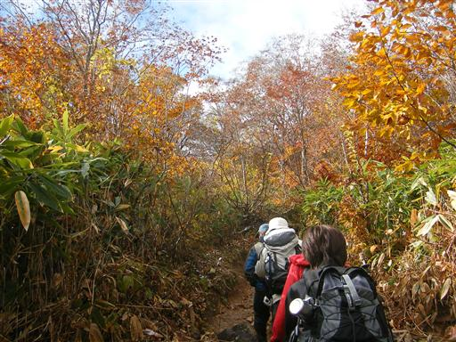
周りは低い雲が立ち込めていて、山頂部も雲に覆われている。
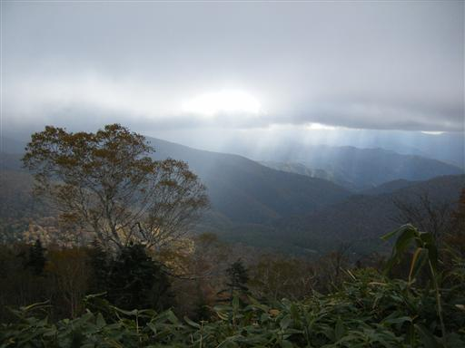
草木に雪が積もっている。
一昨日の悪天候で積もったものだろう。
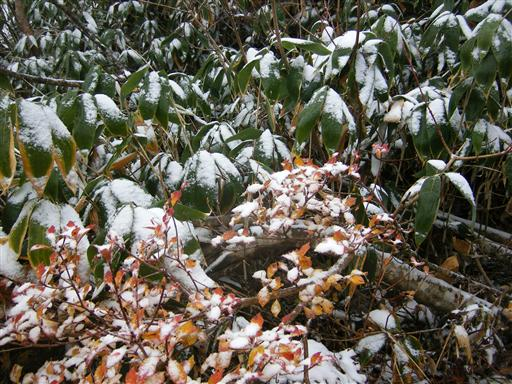
標高を上げると辺りが真白になってくる。
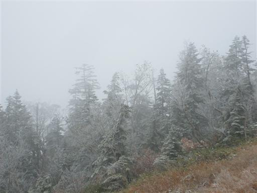
遠くの方に尾瀬ヶ原が見える。
尾瀬ヶ原には日が当たっている所も見える。
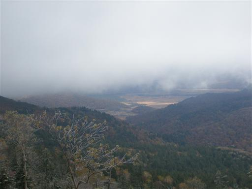
この辺りの登山道は植物を保護するため、木道が設置されている。
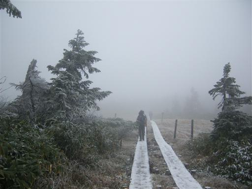
紅葉しているはずの湿原は真白。
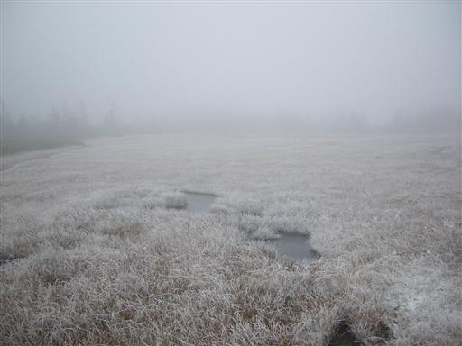
周りの木々も真白。
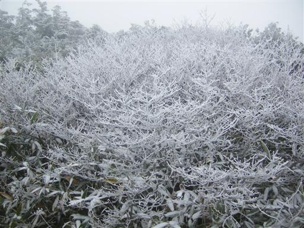
風が強い場所では、雪が3cmほど横に付着している。
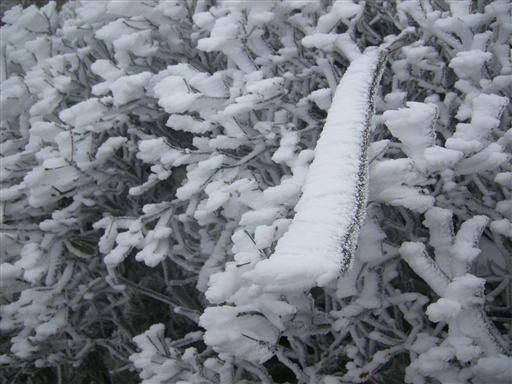
稜線に出ると背の高い植物もなくなり、
強風をまともに受けるので非常に寒い。
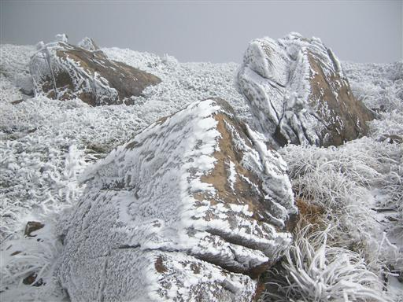
山頂付近は蛇紋岩に覆われている。
この岩の付近ではほとんど植物が育たないらしい。
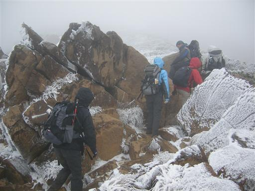
11:40 至仏山山頂到着。標高2228m。
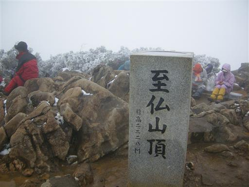
比較的風が穏やかなので、ここで昼食をとる。
残念ながら展望はない。
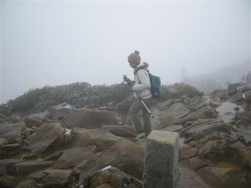
下りは木段を延々と下る。濡れていて非常に良く滑る。
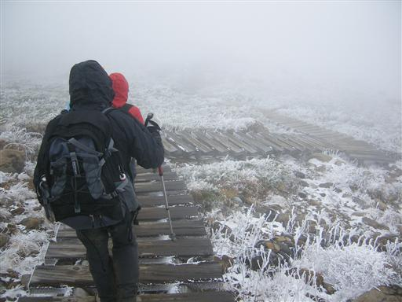
地面は凍りついている。朝夕の冷え込みは相当に厳しそう。
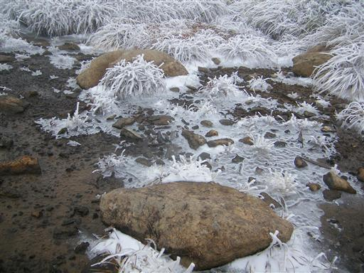
つるつる滑る蛇紋岩の岩場に苦戦しつつ下る。
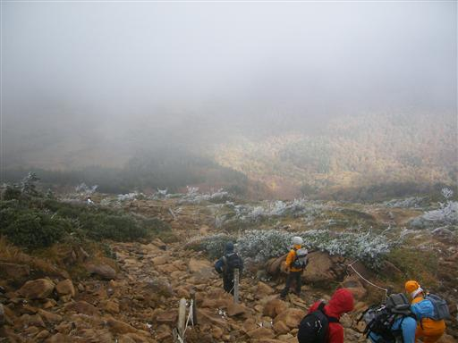
雲の下に出て、ようやく尾瀬ヶ原の全貌を見渡せるようになる。
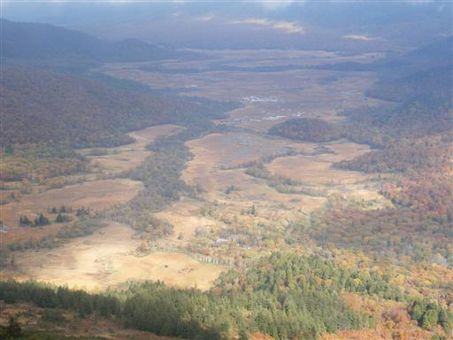
下山するに従い天気も回復してきて、燧ヶ岳もその姿をあらわす。
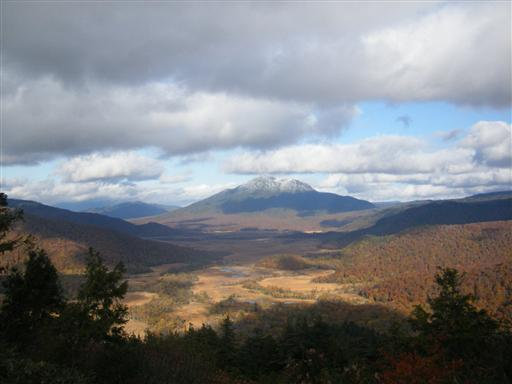
滑りやすく水浸しの階段。なんとも歩きにくい。
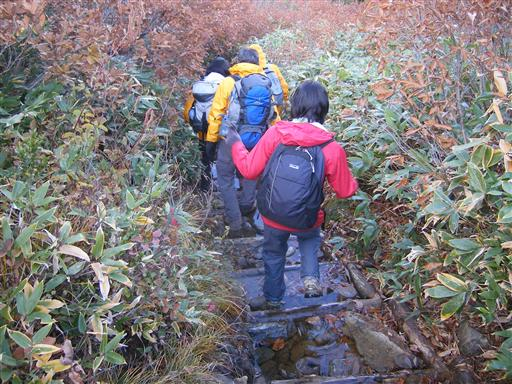
下山。初めての尾瀬。
全体が黄色に染まっている。

至仏山荘に到着。標高1408m。
ここから鳩待峠まで200mほど登る必要がある。
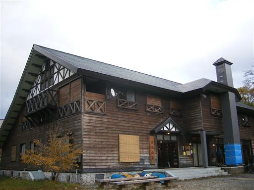
鳩待峠までは木道が続く。
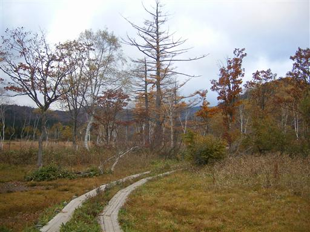
あたりの木々も紅葉しているが、日が当たっていないため、あまり綺麗に見えない。
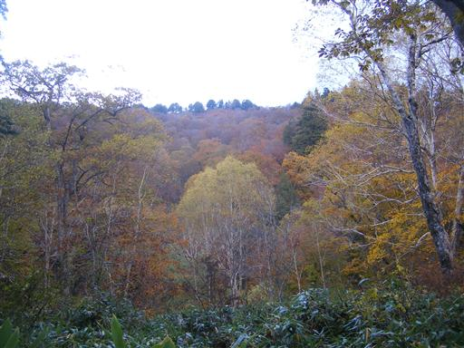
至仏山はまだ雲に隠れたまま。
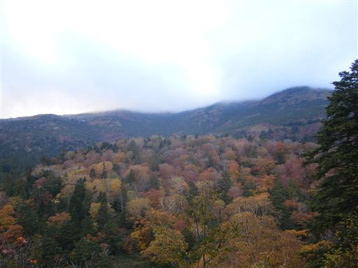
16:29 鳩待峠到着。
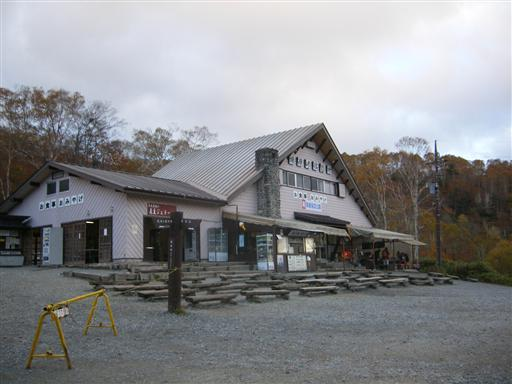
帰りは焼肉屋に寄って帰る。
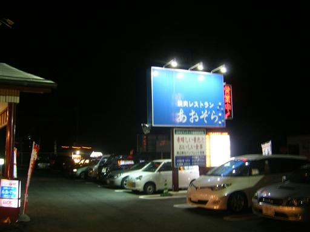